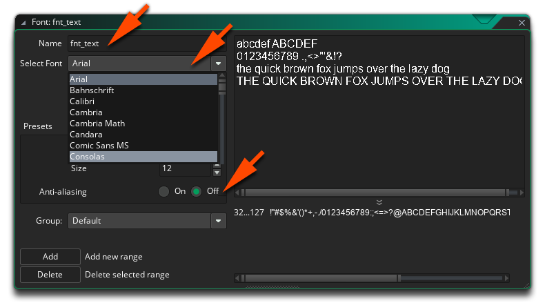

Before we continue with the programming of the display we're going to add a new resource type to our game: a font resource, which is simply a collection of characters to use when drawing text. To create this, use the right mouse button  on Fonts in the resource tree and select Create Font, which will open the Font Editor:
on Fonts in the resource tree and select Create Font, which will open the Font Editor:

Call the font "fnt_text", and then select a font you like from the drop down Select Font menu. In the tutorial we'll use Consolas, and we will also switch off the anti-aliasing option to give a more pixelated and retro look to the font.
With that done, we need to tell GameMaker Studio 2 to use this font for the text, and for that you can call the function draw_set_font(). If your project uses multiple fonts, then you would need to call this function to set the font in the Draw Event before the lines you want to write using the different fonts, but in our small game we only want to use one font for all text, so we'll add it to the Create Event of the object "obj_game", like this:
draw_set_font(fnt_text);
After calling this function, all text in our game will be written using "fnt_text".
Click the "Next" button to see how to update the values...